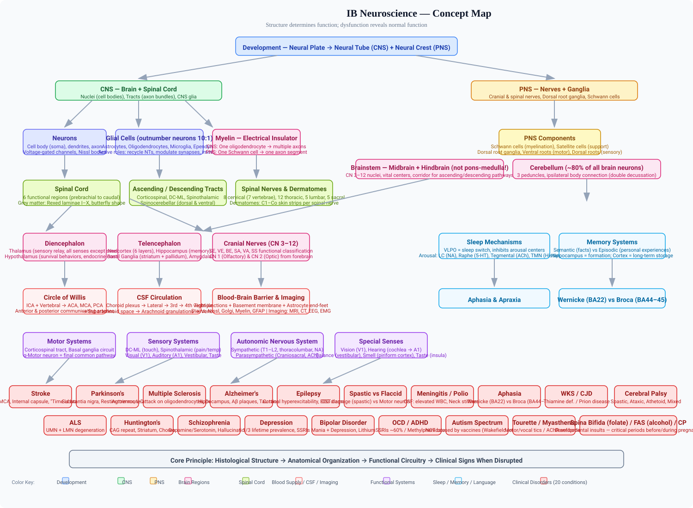
Core principle: Histological structure determines anatomical organization, which enables functional circuitry, which explains clinical signs when disrupted.
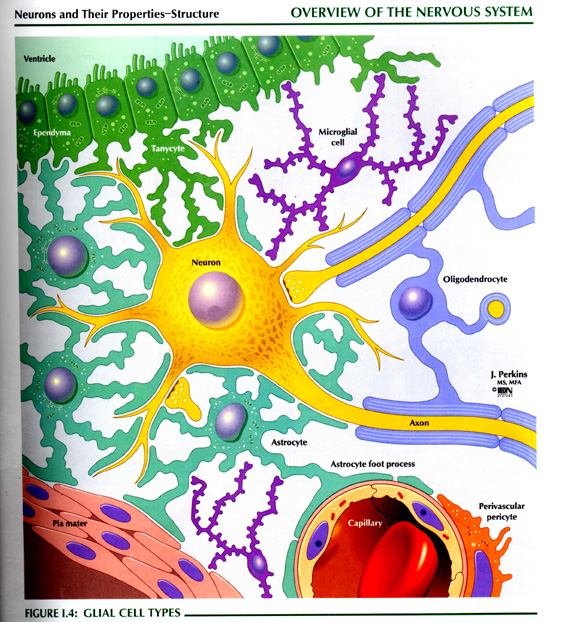
Definition → Explanation → Examples → Connections
The central nervous system (CNS) consists of the brain and spinal cord. The peripheral nervous system (PNS) consists of all cranial and spinal nerves and their associated roots and ganglia.
The PNS has two functional divisions:
Why this matters: The distinction between one-neuron and two-neuron systems explains why somatic motor control is more direct and precise, whereas autonomic control allows for widespread, coordinated visceral responses.
Definition → Explanation → Examples → Connections
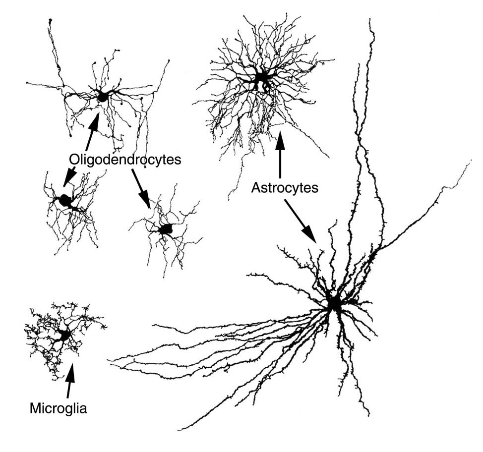
Glial cells provide support and protection for neurons and outnumber neurons 10:1. They are capable of reproduction, and when control over this capacity is lost, primary brain tumors result (e.g., astrocytomas and glioblastomas).
CNS glial cells:
| Cell Type | Key Functions | Clinical Relevance |
|---|---|---|
| Astrocytes | Star-shaped cells that: 1) recycle neurotransmitters; 2) secrete neurotrophic factors (e.g., neural growth factor); 3) dictate and modulate the number of synapses; 4) maintain ionic composition of extracellular fluid by absorbing excess potassium | Form part of the blood-brain barrier; astrocytomas are deadly brain tumors |
| Oligodendrocytes | Form myelin sheaths around brain and spinal cord axons; myelin is an electrical insulator | Target of autoimmune attack in multiple sclerosis |
| Microglia | Smallest glial cells; intrinsic immune effector cells of the CNS; mediate inflammation following damage or microbial invasion | Activated in neurodegenerative diseases |
| Ependyma | Epithelial-like cells that line the ventricles of the brain and the central canal of the spinal cord | Cerebrospinal fluid circulation |
PNS glial cells:
Why this matters: Each glial type has a distinct molecular signature and function. Understanding these differences is essential for diagnosing and treating neurological diseases — MS attacks oligodendrocytes, while peripheral neuropathies often involve Schwann cells.
Definition → Explanation → Examples → Connections
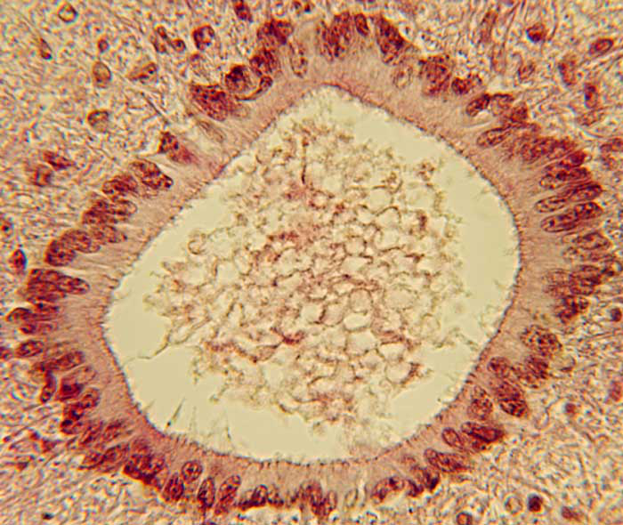
Neurons are the structural and functional units of the nervous system, specialized to conduct electrical signals. The plasma membrane contains voltage-gated ion channels (involved in generation and conduction of electrical signals) and receptors (which bind neurotransmitters and hormones, including ligand-gated ion channels and G protein-coupled receptors).
Three component parts:
Neuronal classification by number of processes:
Neuronal classification by function:
Definition → Explanation → Examples → Connections
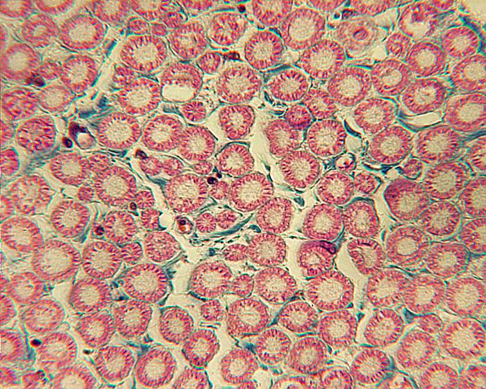
Myelinated axons are invested with a membranous, lipid sheath, making them the largest and fastest conducting nerve fibers. Myelin is a highly organized multilamellar structure.
PNS myelination:
CNS myelination:
Nodes of Ranvier — breaks in the continuity of the myelin sheath occurring regularly in both PNS and CNS. They represent intervals between adjacent segments of myelin and occur at the junction of two lemmocytes (PNS) or two oligodendrocytes (CNS). The nodes appear as constrictions along the nerve fiber and enable saltatory conduction.
Non-myelinated axons (< 1 µm; slow conducting):
Clinical correlation — Demyelination: When axons become demyelinated, they transmit nerve impulses 10 times slower than normal and may stop transmitting altogether. Examples include degenerative myelopathy in dogs (progressive spinal cord disease) and multiple sclerosis in humans. Unlike the PNS, axons in the CNS do not regenerate following injury, in part because CNS myelin contains proteins that inhibit axonal regeneration.
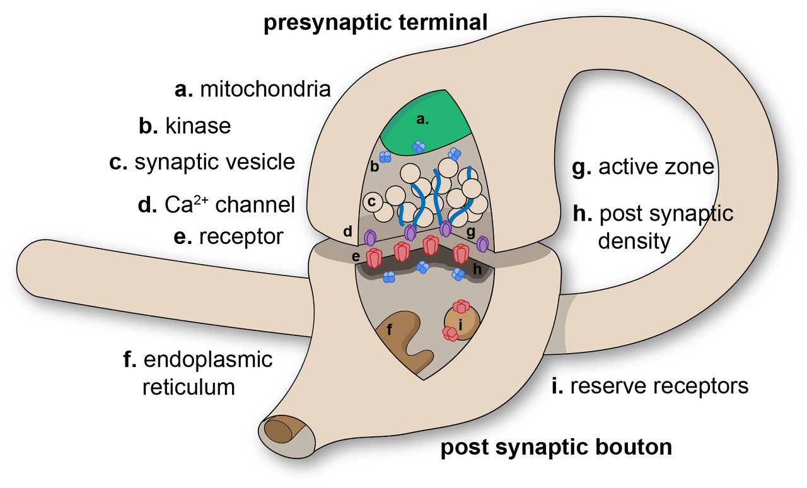
At the ultrastructural level, a synapse consists of:
⚠️ Common Misconception: Many students think “upper motor neuron” and “lower motor neuron” accurately describe the anatomy of motor pathways. In fact, this terminology is misleading and should be avoided. The pyramidal cells of the motor cortex are not structurally similar to actual motor neurons in the brainstem and spinal cord. Correct Understanding: Use corticospinal tract (or corticospinal tract neurons) versus motor neuron (or alpha motor neuron) instead. The corticospinal tract is the descending pathway; motor neurons are the final common pathway to muscles.
⚠️ Common Misconception: Students often think oligodendrocytes and Schwann cells are interchangeable “myelin-making cells.” Correct Understanding: Oligodendrocytes myelinate MULTIPLE axons in the CNS; Schwann cells (lemmocytes) myelinate ONE axon in the PNS. This difference explains why CNS demyelination (MS) and PNS demyelination (Guillain-Barré) have different pathological features and regeneration potential.
⚠️ Common Misconception: Astrocytes are frequently dismissed as mere “support cells” that just hold neurons in place. Correct Understanding: Astrocytes do far more than “support” — they actively recycle neurotransmitters, secrete neurotrophic factors, modulate synapse number and function, maintain ionic composition of extracellular fluid, and contribute to the blood-brain barrier. They are active participants in brain function, not passive scaffolding.
Summary: Neurohistology establishes the cellular foundation of neuroscience: neurons conduct signals, glial cells actively regulate the neuronal environment, and myelin transforms slow unmyelinated conduction into rapid saltatory propagation — with distinct cellular machinery in the CNS versus PNS.
Definition → Explanation → Examples → Connections
The embryonic brain develops from a strip of ectodermal cells that form the neural plate. The edges of the neural plate curl medially to join and form the neural tube, which encloses the neural canal.
At this early stage:
As the neural tube closes, cells break away from the dorsal side to form the neural crest, which gives rise to the peripheral nervous system, melanocytes, and the bones and muscles of the face.
At the rostral end of the neural tube, three expansions appear:
The primary division is defined by Otx2 expression in the forebrain/midbrain and Gbx2 expression in the rostral hindbrain.
Forebrain segments (5 neuromeres):
Midbrain segments (2):
Hindbrain segments (12):
Why this matters: The segmental organization explains why cranial nerve nuclei are arranged in discrete columns and why brainstem lesions produce predictable, localized deficits.
Migration of neurons:
Axon guidance:
| Insult | Effect | Prevention |
|---|---|---|
| Folate deficiency | Neural tube defects (spina bifida) | Folate supplementation before pregnancy |
| Alcohol | Fetal alcohol syndrome | Avoid alcohol in first 8 weeks |
| Rubella | Deafness, blindness, brain abnormalities | Vaccination |
| Iodine deficiency | Hypothyroidism, intellectual disability | Iodized salt/oil |
⚠️ Common Misconception: Many people assume the cerebellum is a minor structure because it is small at birth. Correct Understanding: The cerebellum contains ~80% of all brain neurons (mostly granule cells), making it the most neuron-dense structure in the brain. It grows rapidly postnatally to coordinate complex movements.
Summary: Nervous system development is a precisely orchestrated process of segmentation, cell migration, and axon guidance that transforms a simple neural plate into the most complex organ in the body — with specific critical windows where environmental insults can cause permanent damage.
Definition → Explanation → Examples → Connections
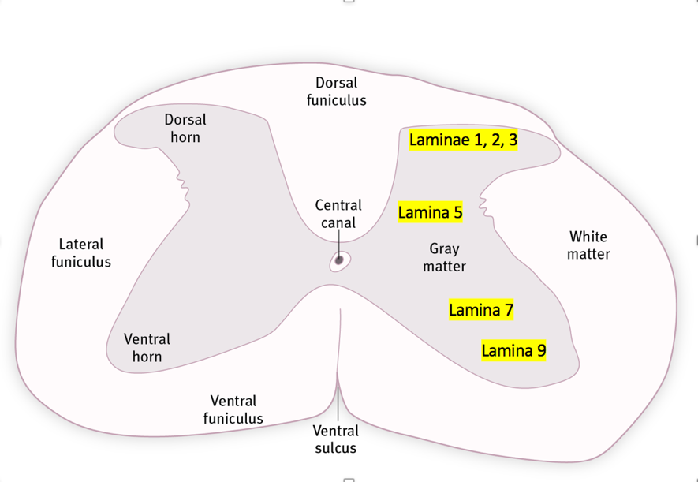
The spinal cord extends from the base of the skull to the first lumbar vertebra. It is thicker in regions connected to the upper and lower limbs.
Grey matter: Butterfly-shaped central area divided into:
White matter: Three funiculi (columns):
Six functional regions of the spinal cord:
| Region | Segments | Function |
|---|---|---|
| Prebrachial (neck) | C1-C4 | Cervical muscles |
| Brachial (upper limb) | C5-T1 | Large ventral horn motor neurons for upper limbs |
| Postbrachial (sympathetic) | T2-L1 | Preganglionic sympathetic neurons |
| Crural (lower limb) | L2-S1 | Large ventral horn motor neurons for lower limbs |
| Postcrural (parasympathetic) | S2-S4 | Preganglionic parasympathetic neurons |
| Caudal (tail) | S5-Co2 | Tail muscles |
Spinal cord tracts:
Spinal nerves:
Definition → Explanation → Examples → Connections
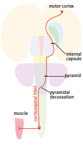
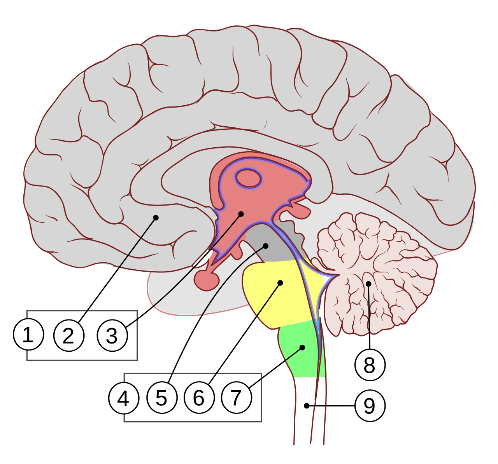
The brain stem is made up of two parts: the midbrain (mesencephalon) and the hindbrain (rhombencephalon). The outdated schema of midbrain-pons-medulla is misleading.
Key functions of the brainstem:
Brainstem cranial nerves (CN 3-12):
| Nerve | Key Functions | Origin/Emergence |
|---|---|---|
| 3 Oculomotor | Eye muscles (except SO, LR); pupil constriction | Interpeduncular fossa (midbrain) |
| 4 Trochlear | Superior oblique muscle | Dorsal surface of isthmus (hindbrain) |
| 5 Trigeminal | Face sensation; mastication muscles | Basilar pons |
| 6 Abducens | Lateral rectus muscle | Caudal border of pons |
| 7 Facial | Facial muscles; taste (anterior tongue); salivary glands | Lateral part of trapezoid body |
| 8 Vestibulocochlear | Hearing and balance | Lateral part of trapezoid body |
| 9 Glossopharyngeal | Taste (posterior tongue); parotid gland; pharyngeal muscle | Lateral margin of caudal hindbrain |
| 10 Vagus | Parasympathetic to thoracic/abdominal viscera | Lateral margin of caudal hindbrain |
| 11 Accessory | Sternomastoid and trapezius (spinal root) | C2-C4 spinal cord (ascends) |
| 12 Hypoglossal | Tongue muscles | Lateral border of pyramid |
Important brainstem landmarks:
Cranial nerve functional classification: Cranial nerve fibers are classified into six functional categories based on their embryological origin and target:
| Category | Abbreviation | Description |
|---|---|---|
| Somatic efferent | SE | Motor to somite-derived muscles (extraocular muscles, tongue muscles). Found in CN 3, 4, 6, 12. |
| Visceral efferent | VE | Parasympathetic preganglionic motor to glands, smooth muscle, cardiac muscle. Found in CN 3, 7, 9, 10. |
| Branchial efferent | BE | Motor to muscles derived from the branchial/pharyngeal arches (mastication, facial expression, pharynx, larynx). Found in CN 5, 7, 9, 10, 11. |
| Somatic afferent | SA | Sensory from skin and mucous membranes (touch, pain, temperature, proprioception). Found in CN 5, 7, 9, 10. |
| Visceral afferent | VA | Sensory from viscera (including taste). Found in CN 7, 9, 10. |
| Special sensory | SS | Vision (CN 2), hearing and balance (CN 8), smell (CN 1). These are special senses with dedicated receptor organs. |
This classification helps understand why a single cranial nerve often carries multiple functionally distinct fiber types — for example, CN 7 (facial nerve) contains BE (facial muscles), VE (parasympathetic to lacrimal and salivary glands), VA (taste from anterior tongue), and SA (skin sensation from part of the external ear).
Definition → Explanation → Examples → Connections
The cerebellum is an outgrowth of the rostral hindbrain (isthmus and first rhombomere). It is tiny at birth but grows rapidly postnatally.
Structure:
Three cerebellar peduncles:
| Peduncle | Direction | Contents |
|---|---|---|
| Inferior | Entering | Spinal cord and inferior olive fibers |
| Middle | Entering | Pontine nuclei fibers (massive) |
| Superior | Leaving | Cerebellar output to red nucleus and thalamus |
Histology — three layers: 1. Molecular layer (outer) 2. Purkinje cell layer (output cells of cerebellar cortex) 3. Granule cell layer (inner) — granule cells comprise about 70% of all neurons in the brain
Inputs:
Function: The cerebellum compares motor commands with actual body movements and adjusts motor control in real-time. It has an ipsilateral connection with the body (damage causes symptoms on the same side).
Classic symptoms of cerebellar damage: Incoordination of voluntary movement, action tremor, balance problems.
Definition → Explanation → Examples → Connections
The diencephalon sits between the midbrain and hypothalamus. It consists of three segments:
Key thalamic nuclei:
| Nucleus | Function |
|---|---|
| Ventroposterior (VP) | Somatosensory relay to postcentral gyrus |
| Dorsal lateral geniculate (DLG) | Visual relay to occipital cortex |
| Medial geniculate (MG) | Auditory relay to superior temporal gyrus |
| Ventrolateral (VL) | Receives cerebellar and globus pallidus input; projects to motor cortex |
| Habenular nuclei | Attached to pineal gland stalk (melatonin secretion) |
Developmental note: The hypothalamus is actually rostral to the diencephalon in developmental terms, but the cephalic flexure (almost 180° bend) pushes it ventral to the thalamus in the adult.
Definition → Explanation → Examples → Connections
The hypothalamus is the most crucial center in the developing human brain. It is formed from the most rostral part of the neural tube and generates the whole telencephalon from its alar plate.
Landmarks in mid-sagittal section:
Key nuclei and functions:
Endocrine control:
Definition → Explanation → Examples → Connections
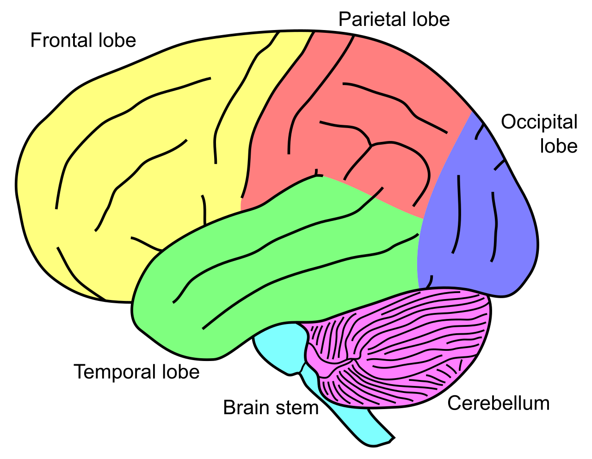
The telencephalic outgrowths arise from the hypothalamus and form the cerebral hemispheres.
Pallium (cortex):
Neocortex layers:
| Layer | Characteristics |
|---|---|
| 1 | Molecular layer |
| 2, 4 | Granule cell layers (dense in sensory areas) |
| 3 | Pyramidal cells |
| 5 | Prominent pyramidal cells (motor cortex); large cells send axons to spinal cord |
| 6 | Multiform layer |
Subpallial structures:
White matter tracts:
Brodmann areas:
| Area | Function | Location |
|---|---|---|
| 4 | Primary motor cortex (M1) | Precentral gyrus |
| 3, 1, 2 | Primary somatosensory cortex (S1) | Postcentral gyrus |
| 41 | Primary auditory cortex (A1) | Superior temporal gyrus |
| 17 | Primary visual cortex (V1) | Occipital lobe (calcarine sulcus) |
| 44, 45 | Broca’s area (motor speech) | Inferior frontal gyrus |
| 39, 40 | Wernicke’s area (speech comprehension) | Superior temporal gyrus |
⚠️ Common Misconception: Many textbooks describe the hypothalamus as “under the thalamus” or as a ventral addition to the diencephalon. Correct Understanding: The hypothalamus is the most rostral part of the neural tube in developmental terms. The cephalic flexure pushes it to its adult ventral position. It generates the entire telencephalon from its alar plate — making it the most crucial developmental center in the human brain.
Summary: The CNS is hierarchically organized from spinal cord (reflexes, pattern generators) through brainstem (vital functions) to forebrain (sensory integration, cognition, motor planning) — with the cerebellum providing real-time coordination and the hypothalamus orchestrating survival behaviors and endocrine control.
Definition → Explanation → Examples → Connections
The brain has an extraordinarily high metabolic demand — it consumes about 20% of the body's oxygen despite representing only 2% of body weight. Blood supply is delivered via two paired arterial systems:
The Circle of Willis: This arterial anastomosis at the base of the brain connects the two internal carotid arteries with the basilar artery via the anterior and posterior communicating arteries. It provides collateral circulation — if one major vessel is occluded, blood can potentially flow through alternative routes to perfuse the affected territory.
| Artery | Territory Supplied | Key Clinical Features of Occlusion |
|---|---|---|
| Anterior cerebral artery (ACA) | Medial frontal and parietal lobes, including the motor and sensory cortex for the leg/foot area | Contralateral leg weakness and sensory loss |
| Middle cerebral artery (MCA) | Lateral frontal, parietal, and temporal lobes; the largest cerebral artery; supplies most of the motor and sensory cortex for face and arm, plus Broca's and Wernicke's speech areas | Contralateral face/arm weakness, aphasia (if dominant hemisphere); most common site of stroke |
| Posterior cerebral artery (PCA) | Occipital lobe (primary visual cortex) and inferior temporal lobe | Contralateral homonymous hemianopia (loss of half the visual field) |
| Anterior communicating artery | Connects the two ACAs | Common site of aneurysm (may cause bitemporal hemianopia from chiasm compression) |
| Posterior communicating artery | Connects ICA to PCA | Aneurysm may compress oculomotor nerve (CN III), causing pupil dilation and eye deviation |
Why this matters: Occlusion of different cerebral arteries produces highly specific neurological deficits. Knowing the vascular territories allows precise localization of a stroke based on the clinical presentation alone. "Time is brain" — every minute of arterial occlusion destroys approximately 1.9 million neurons.
The brain's venous system drains into dural venous sinuses, which are channels between the periosteal and meningeal layers of the dura mater. The major sinuses include the superior sagittal sinus, inferior sagittal sinus, straight sinus, transverse sinuses, and sigmoid sinuses. All eventually drain into the internal jugular veins.
Definition → Explanation → Examples → Connections

Cerebrospinal fluid is a clear, colorless fluid that fills the ventricles and subarachnoid space. It serves three critical functions:
CSF circulation pathway:
Hydrocephalus: Obstruction of CSF flow (e.g., by a tumor, congenital stenosis of the cerebral aqueduct, or post-meningitic scarring) causes accumulation of CSF in the ventricles, leading to ventricular enlargement and increased intracranial pressure. Treatment involves surgical placement of a shunt to divert CSF to another body cavity (typically the peritoneal cavity).
The blood-brain barrier is a highly selective permeability barrier that protects the brain from circulating toxins and pathogens while allowing essential nutrients to pass. It is formed by:
The BBB is absent in certain regions that need to sample blood composition directly: the circumventricular organs, including the area postrema (chemoreceptor trigger zone for vomiting), the organum vasculosum of the lamina terminalis (OVLT), and the subfornical organ.
Clinical relevance: The BBB poses a major challenge for drug delivery to the brain. Only small, lipophilic molecules can cross freely. Inflammation (e.g., in meningitis or MS) can disrupt the BBB, allowing immune cells and normally excluded substances to enter the CNS.
| Stain | What It Labels | Clinical/Research Use |
|---|---|---|
| Nissl stain (cresyl violet) | Rough endoplasmic reticulum (Nissl bodies) in neuronal cell bodies; stains basophilically | Mapping cytoarchitecture (e.g., cortical layers, spinal cord laminae of Rexed) |
| Golgi stain (silver impregnation) | A random small subset of neurons in their entirety — cell body, dendrites, and axon | Revealed neuronal morphology; used by Ramón y Cajal to establish the Neuron Doctrine |
| Myelin stains (Luxol fast blue, Weil) | Myelin sheaths surrounding axons | Tracing white matter pathways; detecting demyelination (e.g., MS plaques) |
| GFAP immunohistochemistry | Glial fibrillary acidic protein in astrocytes | Identifying astrocytes; detecting reactive gliosis after CNS injury |
| NeuN immunohistochemistry | Neuronal nuclei | Identifying and counting neurons; demonstrated in spinal cord motor neurons |
| ChAT immunohistochemistry | Choline acetyltransferase (enzyme synthesizing acetylcholine) | Identifying cholinergic neurons (e.g., autonomic preganglionic neurons in intermediolateral horn) |
| Technique | Principle | Best For | Limitations |
|---|---|---|---|
| MRI | Magnetic fields and radio waves produce detailed images based on tissue water content and relaxation times | Soft tissue differentiation; white matter lesions (MS); tumors; posterior fossa structures | Expensive; slower; cannot be used with certain metal implants |
| CT | X-rays from multiple angles reconstructed by computer to create cross-sectional images | Acute hemorrhage (appears bright white); skull fractures; rapid stroke differentiation (ischemic vs hemorrhagic) | Lower soft-tissue resolution than MRI; radiation exposure |
| EEG | Records electrical activity of the brain via scalp electrodes | Epilepsy diagnosis and classification; assessing consciousness level; sleep studies | Poor spatial resolution; artifacts from muscle activity |
| EMG | Records electrical activity of muscles (needle electrode) | Distinguishing neurogenic from myopathic disorders; assessing muscle atrophy | Invasive (needle); only assesses sampled muscles |
| Nerve conduction studies | Measures speed and amplitude of electrical impulses along peripheral nerves | Detecting demyelination (slowed conduction) vs axonal loss (reduced amplitude) | Only assesses large myelinated fibers; normal results do not exclude small-fiber neuropathy |
Summary: Blood supply to the brain follows a predictable arterial territory map that enables clinical localization of vascular lesions. CSF provides mechanical protection and waste clearance via the ventricular system. Histological stains and modern imaging techniques each reveal specific aspects of nervous system structure and pathology — from cytoarchitecture to demyelination to electrical activity.
Definition → Explanation → Examples → Connections

The corticospinal tract:
Damage to the corticospinal tract:
Other descending motor pathways:
| Tract | Origin | Function |
|---|---|---|
| Rubrospinal | Red nucleus | Flexor movements of distal limbs |
| Tectospinal | Superior colliculus | Orienting movements |
| Vestibulospinal | Vestibular nuclei | Extensor (postural) muscles |
| Reticulospinal | Reticular nuclei | Postural control |
Basal ganglia circuit: Motor cortex (glutamate, excitatory) → striatum (GABA, inhibitory) → pallidum (GABA, inhibitory) → thalamus → motor cortex
Alpha motor neurons — the final common pathway (Sherrington’s term). All motor control systems achieve their effects by stimulating or suppressing alpha motor neurons.
Definition → Explanation → Examples → Connections
Dorsal column-medial lemniscus pathway (touch, pressure, proprioception, vibration): 1. First-order neuron — dorsal root ganglion cell; axon ascends ipsilaterally in gracile fasciculus (lower limb) or cuneate fasciculus (upper limb) 2. Synapses in gracile/cuneate nuclei in hindbrain 3. Second-order neuron axon crosses midline as internal arcuate fibers, forms medial lemniscus 4. Synapses in ventroposterior nucleus of thalamus 5. Third-order neuron projects to primary somatosensory cortex (postcentral gyrus)
Key point: This pathway does NOT cross until it reaches the hindbrain.
Spinothalamic tract (pain, temperature, crude touch): 1. First-order neuron — dorsal root ganglion; enters spinal cord, ascends a few segments 2. Synapses in substantia gelatinosa (laminae 1-4) 3. Second-order neuron crosses midline in anterior white commissure 4. Ascends as lateral spinothalamic (pain/temperature) or anterior spinothalamic (touch) 5. Synapses in ventroposterior thalamus, then to somatosensory cortex
Key point: This pathway crosses WITHIN the spinal cord, a few segments above entry.
Visual system:
Auditory system:
Vestibular system:
Olfactory system:
Taste:
Definition → Explanation → Examples → Connections
The ANS is a two-neuron visceral efferent system (unlike the one-neuron somatic system).
Sympathetic nervous system (thoracolumbar):
Parasympathetic nervous system (craniosacral):
Enteric nervous system (ENS):
| Feature | Sympathetic | Parasympathetic |
|---|---|---|
| Origin | T1-L2 | Cranial + S2-S4 |
| Ganglion location | Paravertebral chain | Near target organ |
| Preganglionic axon | Short | Long |
| Postganglionic axon | Long | Short |
| Postganglionic transmitter | Noradrenaline | Acetylcholine |
| General function | Fight or flight | Rest and digest |
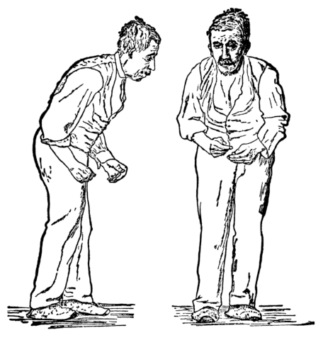
Summary: Functional systems transform anatomical structures into purposeful action. Motor systems hierarchically plan and execute movement; sensory systems faithfully encode and relay environmental information; and the autonomic system maintains homeostasis through its dual sympathetic/parasympathetic control — all converging on the final common pathways of motor neurons and effector organs.
Definition → Explanation → Examples → Connections
Motor signs:
Spastic paralysis vs flaccid paralysis:
| Feature | Spastic (Central) | Flaccid (Peripheral) |
|---|---|---|
| Cause | Corticospinal tract damage | Motor neuron or axon damage |
| Muscle tone | Increased (spastic) | Decreased/absent (flaccid) |
| Reflexes | Exaggerated | Diminished or lost |
| Babinski sign | Present (toe extends) | Absent |
| Muscle atrophy | Mild/minimal | Present |
| Common causes | Stroke, cerebral palsy | Polio, motor neuron disease, peripheral nerve injury |
Terminology warning: The terms “upper motor neuron paralysis” and “lower motor neuron paralysis” are misleading and should be avoided. Use corticospinal tract damage versus motor neuron damage instead.
Tremor types:
Sensory loss patterns:
Cognitive symptoms:
Diagnostic tests:
| Test | Purpose | Key Findings |
|---|---|---|
| Lumbar puncture | Examine CSF | Elevated white cells (meningitis), blood (hemorrhage), oligoclonal bands (MS) |
| MRI | Soft tissue imaging | Tumors, inflammation, ischemia, demyelination, atrophy |
| CT | Bone and acute imaging | Skull fractures, acute hemorrhage, stroke differentiation |
| EEG | Brain electrical activity | Epilepsy diagnosis; alpha (relaxed), beta (focused), theta (fatigued), delta (deep sleep) |
| EMG | Muscle action potentials | Differentiate neuronal vs muscular damage; assess atrophy |
| Nerve conduction studies | Peripheral nerve function | Demyelinating disorders |
| Biopsy | Tissue diagnosis | Tumors, peripheral nerve diseases |
Definition → Explanation → Examples → Connections
Inflammatory conditions:
Neurodegenerative diseases:
Stroke:
Epilepsy:
Trauma:
Genetic conditions:
Peripheral nervous system diseases:
Developmental disorders:
Definition → Explanation → Examples → Connections
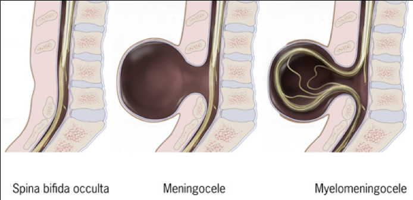
Sleep is an essential, actively regulated process in all vertebrates. It runs in approximately 90-minute cycles, each progressing through non-REM (NREM) stages N1 → N2 → N3 (slow-wave sleep) before entering REM sleep. As the night progresses, slow-wave sleep decreases and REM sleep duration increases.
Awake-promoting centers (arousal system):
The sleep switch — VLPO: The ventrolateral preoptic nucleus (VLPO) in the anterior hypothalamus acts as a master sleep switch. VLPO neurons are GABAergic and galaninergic — they project to and inhibit all the major awake-promoting centers. The VLPO receives circadian input from the suprachiasmatic nucleus (the 24-hour clock), which tells it when to initiate sleep based on light/dark cycles.
This creates a flip-flop switch circuit: when VLPO is active, the arousal centers are inhibited (sleep state); when arousal centers are active, VLPO is inhibited (awake state). This bistable circuit ensures stable states of sleep and wakefulness, rather than intermediate drowsiness. Damage to VLPO causes pathological insomnia, demonstrating its essential role in sleep initiation.
Sleep disorders: About 10% of the general population is affected. Most cases result from external factors, poor sleep hygiene, physical or mental illnesses, or medication side effects. Narcolepsy, a specific disorder of REM sleep regulation, involves sudden attacks of sleep during waking hours and is linked to loss of hypocretin/orexin neurons in the lateral hypothalamus.
Definition → Explanation → Examples → Connections
Memory can be classified into two major types:
Case study — Henry Molaison (H.M.): After bilateral medial temporal lobe resection (including the hippocampus) to treat intractable epilepsy, H.M. lost the ability to form new episodic memories (profound anterograde amnesia) while retaining semantic memory, working memory, and procedural learning ability. This case established that the hippocampus is essential for the formation of new episodic memories but is not the storage site for long-term memories — those are consolidated and stored widely across the neocortex over time.
Aphasia is an acquired language disorder caused by damage to the speech-dominant hemisphere (usually the left). Two classic types:
| Type | Location | Characteristics | Brodmann Area |
|---|---|---|---|
| Wernicke's aphasia (sensory/receptive) | Posterior third of superior temporal gyrus | Fluent but meaningless speech; impaired comprehension; patient unaware of deficits. Speech is grammatically correct but contains paraphasias and lacks meaning. | 22 |
| Broca's aphasia (motor/expressive) | Inferior frontal gyrus (pars opercularis and pars triangularis) | Non-fluent, effortful, agrammatical speech; comprehension relatively preserved; patient is aware of and frustrated by the deficit. | 44, 45 |
Apraxia is a disorder of motor planning characterized by inability to perform skilled, learned movements on command, despite intact motor function, sensation, and comprehension. Two primary types:
Apraxia is traditionally considered a sign of parietal or prefrontal cortex damage and can be caused by trauma, stroke, or tumor.
Tourette's syndrome: A common neurological disorder characterized by multiple motor and vocal tics — repetitive, involuntary actions that can be simple (eye blinking, throat clearing) or complex (jumping, echoing words). Men are more commonly affected than women. Onset is typically during childhood. Treatment involves medication (dopamine antagonists), behavioral therapy, and social skills training.
Wernicke-Korsakoff syndrome (WKS): A neurological disorder caused by thiamine (vitamin B1) deficiency, most commonly due to chronic alcohol abuse. It has two phases:
Treatment with high-dose thiamine can reverse Wernicke's encephalopathy if administered early, but Korsakoff's syndrome causes permanent damage. The prognosis is poor — about 20% of patients die within weeks of diagnosis.
Infantile cerebral palsy (CP): A group of non-progressive movement disorders resulting from damage to the developing brain (prenatal, perinatal, or early postnatal). Four subtypes:
There is no cure; treatment focuses on maximizing independence through physical therapy, occupational therapy, and assistive devices.
Substance abuse and the dopamine reward system: Most addictive substances act on the brain's dopamine reward pathway — the mesolimbic pathway from the ventral tegmental area (VTA) to the nucleus accumbens. By increasing dopamine release or blocking its reuptake, these substances generate feelings of pleasure and reinforce drug-taking behavior. With repeated exposure, the system adapts (tolerance develops), requiring higher doses to achieve the same effect. Key substance groups include opioids, stimulants (cocaine, amphetamines), depressants (alcohol, benzodiazepines), hallucinogens, and cannabis.
Psychiatric disorders:
Sleep disorders:
⚠️ Common Misconception: Students often confuse spastic and flaccid paralysis, or assume both are caused by “nerve damage” generically. Correct Understanding: Flaccid paralysis = peripheral/LMN damage (loss of tone, reflexes, muscle mass); Spastic paralysis = central/corticospinal tract damage (increased tone, hyperreflexia, Babinski sign). The two have opposite clinical pictures because one damages the final output neuron while the other damages the descending control pathway.
⚠️ Common Misconception: Students often think all tremors indicate Parkinson’s disease. Correct Understanding: Resting tremor (present at rest, disappears with movement) = Parkinson’s; Action tremor (worsens with movement, absent at rest) = cerebellar damage. The distinction is clinically crucial because it immediately points to different anatomical locations and treatment approaches.
Summary: Clinical neurology applies anatomical and functional knowledge to diagnose and understand disease. The same pathways that enable normal function, when disrupted, produce predictable signs — from the spasticity of corticospinal stroke to the resting tremor of substantia nigra degeneration, from the demyelination of MS to the catastrophic memory loss of hippocampal damage.
Definition → Explanation → Examples → Connections
The amygdala is an almond-shaped structure in the medial temporal lobe that serves as the brain's central hub for emotional processing, particularly fear and threat detection. It receives sensory input from the thalamus (fast, crude "low road") and sensory cortex (slower, detailed "high road"), allowing rapid responses to potential danger before conscious awareness.
Key amygdala output pathways:
Other emotions: While most studied for fear, the amygdala also processes aggression and social hierarchy behaviors. The insula processes disgust and interoception (internal body sensations). The anterior cingulate cortex (ACC) integrates emotional salience with cognitive control, involved in empathy and emotional awareness. The ventromedial prefrontal cortex (vmPFC) is critical for evaluating the emotional value of choices and regulating emotional responses.
Why this matters: Amygdala dysfunction is implicated in anxiety disorders, PTSD (hyperactive amygdala + reduced PFC regulation), and psychopathy (reduced amygdala response to others' distress). Understanding emotion circuits explains why SSRIs (which enhance serotonin) reduce anxiety — serotonin strengthens PFC→amygdala inhibitory control.
Definition → Explanation → Examples → Connections
The brain's reward system centers on the mesolimbic dopamine pathway: dopaminergic neurons in the ventral tegmental area (VTA) of the midbrain project to the nucleus accumbens (ventral striatum), prefrontal cortex, and amygdala. Dopamine release in the accumbens signals that an event was better than expected (reward prediction error), driving learning and motivation to repeat rewarding behaviors.
How addictive substances hijack this system:
| Substance Class | Mechanism | Examples and Effects |
|---|---|---|
| Opioids | Agonist at μ-opioid receptors → disinhibits VTA dopamine neurons → ↑ dopamine release in accumbens | Heroin, morphine, oxycodone, fentanyl — produce euphoria, analgesia, severe physical dependence. Overdose causes respiratory depression. |
| Stimulants | Block dopamine reuptake (cocaine) or reverse dopamine transporter (amphetamine) → ↑ synaptic dopamine | Cocaine, amphetamine, methamphetamine — increase alertness, energy, euphoria. Chronic use damages dopaminergic terminals. |
| Alcohol | Enhances GABA-A receptor function (inhibitory) and inhibits NMDA receptors (reduces glutamate excitation) | Biphasic effect: low doses disinhibit dopamine neurons (reward), high doses cause widespread CNS depression. Withdrawal can be life-threatening (delirium tremens). |
| Nicotine | Agonist at nicotinic acetylcholine receptors on VTA dopamine neurons → ↑ dopamine release | Highly addictive due to rapid delivery (seconds from lungs to brain). Associated with increased risk of lung cancer, cardiovascular disease. |
| Cannabinoids | Agonist at CB1 receptors → indirectly disinhibits VTA dopamine neurons | Tetrahydrocannabinol (THC) produces euphoria, altered perception, increased appetite. Cannabidiol (CBD) is non-psychoactive with anxiolytic effects. |
Tolerance and withdrawal: With repeated substance use, the brain adapts by reducing dopamine receptor sensitivity (tolerance) — the same dose produces less effect, requiring dose escalation. When substance use stops, the adapted system produces withdrawal symptoms (dysphoria, anxiety, cravings), driving compulsive drug-seeking behavior. The prefrontal cortex, which normally exerts inhibitory control over impulsive behavior, becomes hypofunctional in addiction, impairing decision-making and self-control.
Treatment approaches: Opioid addiction — methadone/buprenorphine (long-acting opioid agonists) + naltrexone (opioid antagonist). Alcohol — naltrexone, acamprosate, disulfiram. Nicotine — varenicline (partial nicotinic agonist), nicotine replacement. Behavioral therapies (CBT, contingency management) are essential adjuncts.
Definition → Explanation → Examples → Connections
The hypothalamic-pituitary-adrenal (HPA) axis is the body's primary stress response system:
Chronic stress effects on the brain: Prolonged elevation of cortisol is neurotoxic to hippocampal neurons — it reduces dendritic branching, inhibits adult neurogenesis in the dentate gyrus, and can cause hippocampal volume loss. This is seen in conditions such as major depression and Cushing's syndrome. The amygdala, in contrast, shows dendritic hypertrophy under chronic stress, creating an imbalance favoring fear/anxiety circuits over cognitive control. These changes are partially reversible when stress is reduced or through antidepressant treatment (which promotes hippocampal neurogenesis).
Definition → Explanation → Examples → Connections
While embryonic development establishes the basic structure of the nervous system, postnatal development involves extensive refinement:
Synapse formation and pruning: In the first few years of life, the brain forms approximately 1 million new synapses per second, producing a massive overabundance of connections. Starting in late childhood and continuing through adolescence, unused synapses are eliminated through activity-dependent pruning — synapses that are frequently used are strengthened and retained; those rarely used are removed. This "use it or lose it" principle underlies the importance of early experience and education.
Critical periods: Specific time windows during which the brain is especially sensitive to particular types of experience:
Adolescent brain development: The prefrontal cortex (responsible for impulse control, planning, and decision-making) is the LAST brain region to fully mature, not completing development until approximately age 25. In contrast, the limbic system (emotion, reward) matures earlier. This developmental mismatch explains characteristic adolescent behaviors: increased risk-taking, heightened sensitivity to peer influence, and relatively poor impulse control relative to emotional intensity.
Definition → Explanation → Examples → Connections
Contrary to the long-held dogma that the adult brain cannot produce new neurons, we now know that new neurons are generated throughout life in at least two regions:
Factors affecting neurogenesis:
| Enhances Neurogenesis | Impairs Neurogenesis | Mechanism |
|---|---|---|
| Aerobic exercise | Chronic stress | Exercise ↑ BDNF and blood flow; stress ↑ cortisol → neuronal damage |
| Enriched environment | Sleep deprivation | Cognitive stimulation promotes survival of new neurons |
| Learning / education | Aging | Learning tasks ↑ survival of newly generated neurons |
| SSRI antidepressants | Depression | SSRIs ↑ hippocampal neurogenesis; this may be required for therapeutic effect (takes 3–6 weeks, matching timeline of clinical response) |
| Caloric restriction | Alcohol / substance abuse | Mild metabolic stress activates neuroprotective pathways |
Aging brain: Normal aging is associated with gradual cortical thinning (especially prefrontal cortex), reduced synaptic density, white matter changes, and decreased neurotransmitter levels. However, cognitive decline is NOT inevitable — factors that promote cognitive reserve include higher education, bilingualism, regular physical exercise, social engagement, and lifelong learning. The concept of cognitive reserve explains why some individuals maintain function despite significant Alzheimer's pathology: their brains have built redundant networks and alternative processing strategies through a lifetime of intellectual stimulation.
Why this matters: Understanding that the adult brain retains plasticity — forming new neurons and new synapses — has profound implications for rehabilitation after injury, treatment of depression, and strategies for healthy aging. The brain is not a static organ; it continuously remodels itself in response to experience throughout life.
Summary: Emotion, reward, stress, development, and aging represent dynamic processes that shape brain function across the lifespan — from the amygdala's rapid fear detection to the prefrontal cortex's slow maturation, from dopamine-driven addiction to experience-dependent synaptic pruning. Understanding these processes bridges the gap between molecular neuroscience and the lived human experience of emotion, learning, and behavior.
| CN | Name | Type | Key Functions | Brainstem Origin |
|---|---|---|---|---|
| I | Olfactory | Special sensory | Smell | Forebrain (not brainstem) |
| II | Optic | Special sensory | Vision | Forebrain (not brainstem) |
| III | Oculomotor | Motor + parasympathetic | Most eye muscles, pupil constriction | Midbrain (superior colliculus level) |
| IV | Trochlear | Motor | Superior oblique muscle | Isthmus (dorsal exit) |
| V | Trigeminal | Mixed | Face sensation, mastication | Basilar pons |
| VI | Abducens | Motor | Lateral rectus muscle | Caudal pons |
| VII | Facial | Mixed | Facial expression, taste (ant. tongue), salivation | Hindbrain |
| VIII | Vestibulocochlear | Special sensory | Hearing, balance | Hindbrain |
| IX | Glossopharyngeal | Mixed | Taste (post. tongue), parotid, pharynx | Caudal hindbrain |
| X | Vagus | Mixed | Parasympathetic to thoracic/abdominal viscera | Caudal hindbrain |
| XI | Accessory | Motor | Sternomastoid, trapezius | Spinal cord C2-C4 |
| XII | Hypoglossal | Motor | Tongue muscles | Caudal hindbrain |
| Pathway | Direction | Decussation | Function |
|---|---|---|---|
| Corticospinal tract | Descending | Pyramidal decussation (hindbrain) | Voluntary motor control |
| Dorsal columns | Ascending | Sensory decussation (hindbrain) | Touch, pressure, vibration, proprioception |
| Spinothalamic tract | Ascending | Anterior white commissure (spinal cord) | Pain, temperature, crude touch |
| Medial lemniscus | Ascending | Already crossed | Sensory relay to thalamus |
| Superior cerebellar peduncle | Leaving cerebellum | Decussation at isthmus | Cerebellar output to thalamus |
| System | Neurotransmitter | Key Location |
|---|---|---|
| Somatic motor | Acetylcholine | Neuromuscular junction |
| Sympathetic preganglionic | Acetylcholine | Spinal cord T1-L2 |
| Sympathetic postganglionic | Noradrenaline | Sympathetic chain ganglia |
| Parasympathetic (all) | Acetylcholine | Cranial/sacral ganglia |
| Corticostriatal | Glutamate | Motor cortex → striatum |
| Striatopallidal | GABA | Striatum → pallidum |
| Nigrostriatal | Dopamine | Substantia nigra → striatum |
| Reward pathway | Dopamine | VTA → accumbens |
| Awake centers | Noradrenaline, serotonin, ACh, histamine | Brainstem/hypothalamus |
These notes were generated from the IBB Neuroscience curriculum materials (Neurohistology, Neuroanatomy, and Neurology) and are designed to replace the original lecture materials for independent study.